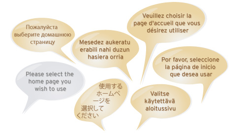

5 of 11
Freedom in every language
Web-based translation

Build an open community to translate your software into almost any language. Simple web–based translation and review, GNU GetText support and automatic suggestions from a library of sixteen million translated strings.
Open to everyone
Anyone that has a knowledge of English and at least one other language can help translate your project using a normal web browser and their Launchpad account.

You choose how open your project is to new translators, from four ready-made policies:
Open: everyone can translate, inviting spontaneous translations.
Partly restricted and structured: anyone can make suggest translations, while trusted community members review and approve new work.
Closed: only approved translators may make suggestions. Ideal if your project requires copyright assignment.
Supports open standards
Launchpad makes it easy to integrate translations into your software, by supporting the popular GNU GetText file formats.

Import and export GetText files for offline as well as online translation. You can also import Mozilla’s XPI format and export in GetText’s MO format.
Point and click suggestions
The same phrases often crop up in software interfaces.
Launchpad saves your translators time by automatically suggesting possible translations from its library of millions of strings.
Concurrent translations
Each major release of your project can have its own translation effort.

While one group translates your upcoming release, others can continue work on your current stable release.